<meta charset="utf-8"><title>11/17のコラム note貼り付け</title>
<style>
/* one column of numbered paste steps; text steps vs image steps differ by marker */
:root{--bg:#F5F4F0;--card:#FFFFFF;--ink:#1D2321;--mute:#5F665F;--line:#DCDAD2;--btn:#1F5FBF;--btnok:#2E8B4F;--img:#E9F3EC;--imgink:#22663B;--sans:'IBM Plex Sans JP','Hiragino Sans','Noto Sans JP',sans-serif}
@media (prefers-color-scheme:dark){:root:not([data-theme="light"]){--bg:#171A19;--card:#202423;--ink:#ECEDE8;--mute:#A3AAA2;--line:#343937;--btn:#4D8BE6;--btnok:#3FA866;--img:#1E2C23;--imgink:#8FD3A6;color-scheme:dark}}
:root[data-theme="dark"]{--bg:#171A19;--card:#202423;--ink:#ECEDE8;--mute:#A3AAA2;--line:#343937;--btn:#4D8BE6;--btnok:#3FA866;--img:#1E2C23;--imgink:#8FD3A6;color-scheme:dark}
body{background:var(--bg);color:var(--ink);font-family:var(--sans);font-size:15px;line-height:1.75;padding:20px 16px 60px}
main{max-width:680px;margin:0 auto;display:grid;gap:28px}
header h1{font-size:22px;margin:0 0 6px;text-wrap:balance}
header p{margin:0;color:var(--mute);font-size:14px}
nav{display:flex;gap:8px;flex-wrap:wrap;margin-top:12px}
nav a{border:1px solid var(--line);border-radius:999px;padding:4px 14px;color:var(--ink);text-decoration:none;font-size:14px;background:var(--card)}
.part h2{font-size:18px;line-height:1.5;margin:0 0 12px;text-wrap:balance;display:flex;gap:10px;align-items:baseline;flex-wrap:wrap}
.tag{font-size:13px;background:var(--ink);color:var(--bg);border-radius:6px;padding:1px 9px}
.steps{list-style:none;margin:0;padding:0;display:grid;gap:12px}
.st{background:var(--card);border:1px solid var(--line);border-radius:12px;padding:12px;min-width:0}
.hd{display:flex;align-items:center;gap:8px;margin-bottom:8px}
.no{width:26px;height:26px;border-radius:50%;background:var(--btn);color:#fff;display:inline-flex;align-items:center;justify-content:center;font-size:13px;font-weight:700;flex:0 0 26px}
.im .no{background:var(--btnok)}
.hd em{font-style:normal;font-size:12px;background:var(--img);color:var(--imgink);border-radius:6px;padding:0 8px}
.bx{font-size:13.5px;line-height:1.7;border:1px solid var(--line);border-radius:8px;padding:8px 10px;max-height:110px;overflow:auto;overflow-wrap:anywhere}
.bx.tall{max-height:150px}.bx p{margin:0 0 6px}.bx h2{font-size:14px;margin:8px 0 4px}.bx a{color:var(--btn)}
.st img{display:block;width:100%;max-width:100%;border:1px solid var(--line);border-radius:8px}
.sub{font-size:12.5px;color:var(--mute);margin:6px 0 0}
.cp{width:100%;margin-top:8px;padding:12px;border:0;border-radius:10px;background:var(--btn);color:#fff;font:600 15px var(--sans);cursor:pointer}
.cp.ok{background:var(--btnok)}.cp.dl{background:var(--btnok)}.cp:focus-visible{outline:3px solid var(--ink);outline-offset:2px}
.xh{font-size:15px;margin:20px 0 10px}
.fb{font-size:13px;line-height:1.7;margin:8px 0 0;padding:8px 10px;border-radius:8px;background:var(--img);color:var(--imgink)}
.opts{display:grid;grid-template-columns:repeat(auto-fill,minmax(240px,1fr));gap:10px}
.opt{min-width:0}.opt img{display:block;width:100%;border:1px solid var(--line);border-radius:8px}
.ol{display:flex;align-items:center;gap:8px;margin-top:6px}.ol b{font-size:13px;flex:0 0 auto}.ol .on{font-size:12.5px;color:var(--mute);flex:1;min-width:0}.ol .cp{width:auto;flex:0 0 auto;padding:9px 14px}.ol .cp{margin:0;padding:9px}
.toast{font-size:13px;color:var(--mute);margin-top:6px}
</style>
<main><header><h1>11/17のコラム note貼り付け</h1><p>いま公開済みは7本です。青い番号は文章、緑は画像です。</p><nav><a href="#p1">1</a><a href="#p2">2</a><a href="#p3">3</a><a href="#p4">4</a><a href="#p5">5</a><a href="#p6">6</a><a href="#p7">7</a></nav></header><section class="part" id="p1"><h2><span class="tag">OFF GRID</span>平川亮、ラスベガスのFP1へ　小松代表「WEC世界王者として」</h2><p class="sub">サイトに公開：19:45</p><ol class="steps">
<li class="st im"><div class="hd"><span class="no">1</span><b>見出し画像</b><em>画像</em></div>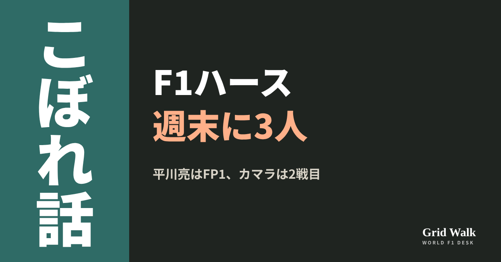<button class="cp dl" data-img="img/hirakawa-las-vegas-fp1-20261117.png" data-name="hirakawa-las-vegas-fp1-20261117_見出し画像.png">ダウンロード</button></li>
<li class="st"><div class="hd"><span class="no">2</span><b>タイトル</b></div><div class="bx" id="p1t">平川亮、ラスベガスのFP1へ　小松代表「WEC世界王者として」</div><button class="cp" data-plain="p1t">タイトルをコピー</button></li>
<li class="st"><div class="hd"><span class="no">3</span><b>本文</b></div><div class="bx tall" id="p1r"><p>ラスベガスGPの週末、ハースのマシンには3人が乗ります。決勝を走るのはオリバー・ベアマンとラファエル・カマラ。そして1回目のフリー走行（FP1）では、リザーブドライバーの平川亮がベアマンの車に乗ります。ハースが11月15日に出したラスベガスGPのプレビューで明らかにしました。</p><p>平川亮のメキシコの入賞と、豊田会長の言葉を伝えたコラムへの案内はサイトで → <a href="https://f1gridwalk.github.io/lens/hirakawa-las-vegas-fp1-20261117/?utm_source=note&amp;utm_campaign=hirakawa-las-vegas-fp1-20261117">https://f1gridwalk.github.io/lens/hirakawa-las-vegas-fp1-20261117/?utm_source=note&amp;utm_campaign=hirakawa-las-vegas-fp1-20261117</a></p><p>イギリスのSky Sportsが伝えた時間によると、FP1は日本時間で11月20日（金）の午前9時30分、現地ラスベガスでは19日（木）の夕方に始まります。ラスベガスGPは2026年の第21戦で、全23戦のうち残りはこのあとのカタールとアブダビの2戦です（F1公式）。</p><h2>WEC王者になって、もう一度FP1へ</h2><p>小松礼雄代表は、平川についてこう話しています。</p><blockquote><p>「リザーブドライバーの平川亮も、メキシコで土曜の朝に急きょ起用されたとき、見事な走りを見せてくれた」「彼はFP1で、オリー・ベアマンに代わってまたクルマに乗る。今度は2026年のWEC世界王者としてだ」（小松代表、ハース公式／アメリカ）</p></blockquote><p>メキシコシティGPの平川は、13位でチェッカーを受け、ほかの車への罰で繰り上がって、正式結果10位・1点でした（RACER／アメリカ）。その後、WECではトヨタで世界王者になっています。ハースのプレビューによると、今回は今季4回目のFP1で、ラスベガスの市街地コースを走るのは初めてです。</p><p>メキシコの週末とWECの最終戦は、読み解き https://f1gridwalk.github.io/topics/hirakawa-tenth-and-one-point-twice/ で、来季のF1の席を逃した平川に豊田章男会長がかけた言葉は、コラム https://f1gridwalk.github.io/lens/toyoda-hirakawa-dream-20261103/ で書いています。</p><h2>カマラは2戦目、F2は首位のまま</h2><p>決勝は、地元のサンパウロGPでデビューしたカマラが続けて走ります。Sky Sportsによると、デビューは雨の難しい条件で、予選でクラッシュし、決勝は完走した車の中で最後でした。小松代表は、こう話しています。</p><blockquote><p>「ブラジルで、2027年に加わるラファ・カマラは、とても厳しい条件の中でデビューし、私たちが彼と2027年の契約を結んだ理由を、私たちと世界に示してくれた」「私たちと走る2回目の週末で、それを積み上げていくのが楽しみだ」（小松代表、ハース公式／アメリカ）</p></blockquote><p>ラスベガスは、カマラにとっても初めてのコースです。本人は前を向いています。</p><blockquote><p>「ブラジルはいい勉強になった。ここからはそれを土台に、一歩ずつ良くしていきたい」（カマラ、ハース公式／アメリカ）</p></blockquote><p>Sky Sportsによると、カマラはF2で7点差の首位に立ち、最後の2大会、カタールとアブダビを控えています。F1の経験を優先するのか、F2の王座を優先するのかはわからず、同じ大会で両方を走るのは大きな負担になる、とも書いています。11月16日の時点で、ハースはラスベガスのあとの2戦で誰がベアマンと組むかを発表していません。決勝に使えるドライバーは1年に4人までという決まりと、考えられる顔ぶれは、コラム https://f1gridwalk.github.io/lens/hirakawa-haas-four-driver-rule-20261111/ で書いています。</p><h2>アウディとは3点差</h2><p>F1公式の順位表では、サンパウロGPを終えて、ハースはコンストラクターズ7位の31点です。8位のアウディは28点で、差は3点しかありません。小松代表はプレビューで、こう話しています。</p><blockquote><p>「最近のレースで、すべてがうまくいけば、とても高いレベルで戦えることを示した。メキシコの日曜に見せたレベルに戻したい」（小松代表、ハース公式／アメリカ）</p></blockquote><p>編集部としては、平川がFP1でラスベガスのコースを知っておくことは、残り2戦の顔ぶれが決まっていない今のハースにとって、小さくない意味があると見ています。</p><p><strong>アウディとの差は3点。ハースが3人で臨むラスベガスの週末、あなたがいちばん注目するのは誰ですか？</strong></p><p>━━━━━━━━━━</p><p><strong>F1 Grid Walk では、世界のF1ニュースを毎日日本語でまとめています。</strong></p><p>海外の記事の要約を、毎日載せています。</p><p><a href="https://f1gridwalk.github.io/">https://f1gridwalk.github.io/</a></p><p>ほかの海外記事も読みたい方は、F1 Grid Walkへ。</p><p><a href="https://f1gridwalk.github.io/lens/hirakawa-las-vegas-fp1-20261117/">https://f1gridwalk.github.io/lens/hirakawa-las-vegas-fp1-20261117/</a></p><p>━━━━━━━━━━</p><p><a href="https://www.haasf1team.com/news/las-vegas-grand-prix-race-preview-1">出典：ハース公式（アメリカ）</a></p><p><a href="https://www.skysports.com/f1/news/13612731/rafael-camara-haas-keep-brazilian-driver-as-oliver-bearmans-team-mate-for-las-vegas-gp-following-home-debut">出典：Sky Sports（イギリス）</a></p><p><a href="https://racer.com/2026/11/01/hirakawa-promoted-to-debut-points-by-piastri-alpine-penalties">出典：RACER（アメリカ）</a></p><p><a href="https://www.formula1.com/en/results/2026/team">出典：F1公式サイト（イギリス）</a></p><p><a href="https://www.formula1.com/en/racing/2026">出典：F1公式サイト（イギリス）</a></p></div><button class="cp" data-rich="p1r">本文をコピー</button></li>
<li class="st"><div class="hd"><span class="no">4</span><b>ハッシュタグ</b></div><div class="bx" id="p1h">#F1 #F1jp #ハース #平川亮 #カマラ #小松礼雄 #ラスベガスGP #F1こぼれ話 #OFFGRID</div><button class="cp" data-plain="p1h">タグをコピー</button></li>
</ol><h3 class="xh">X</h3><ol class="steps">
<li class="st im"><div class="hd"><b>X用の画像</b><em>画像</em></div>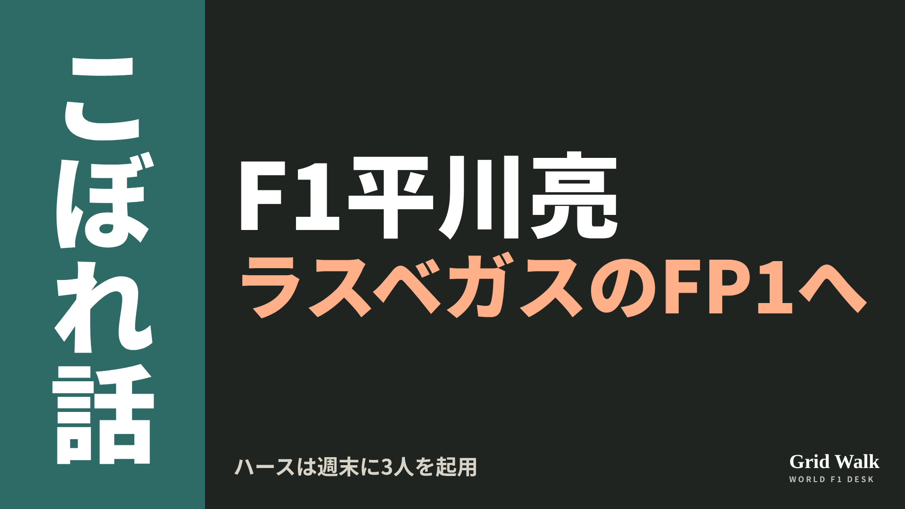<button class="cp dl" data-img="img/x_hirakawa-las-vegas-fp1-20261117.png" data-name="x_hirakawa-las-vegas-fp1-20261117.png">ダウンロード</button></li>
<li class="st"><div class="hd"><b>① noteをシェアするときの文</b></div><div class="bx" id="p1x0">平川亮がラスベガスGPのFP1を走ります。小松代表は「WEC世界王者として」車に戻ると紹介。カマラはハースで2戦目です。noteにまとめました #F1jp #平川亮 #ハース</div><button class="cp" data-plain="p1x0">コピー</button></li>
<li class="st"><div class="hd"><b>② ①への返信</b></div><div class="bx" id="p1x1">ほかの海外記事も読みたい方は、F1 Grid Walkへ。
https://f1gridwalk.github.io/lens/hirakawa-las-vegas-fp1-20261117/?utm_source=x&amp;utm_campaign=hirakawa-las-vegas-fp1-20261117</div><button class="cp" data-plain="p1x1">コピー</button></li>
<li class="st"><div class="hd"><b>③ ②への返信</b></div><div class="bx" id="p1x2">毎日の海外F1ニュースは、日本語でこちらにまとめています。
https://f1gridwalk.github.io/</div><button class="cp" data-plain="p1x2">コピー</button></li>
</ol></section><section class="part" id="p2"><h2><span class="tag">OFF GRID</span>F1のV8復活案は2.1リッター　電動200kW、半分は追い抜き用</h2><p class="sub">サイトに公開：19:46</p><ol class="steps">
<li class="st im"><div class="hd"><span class="no">1</span><b>見出し画像</b><em>画像</em></div>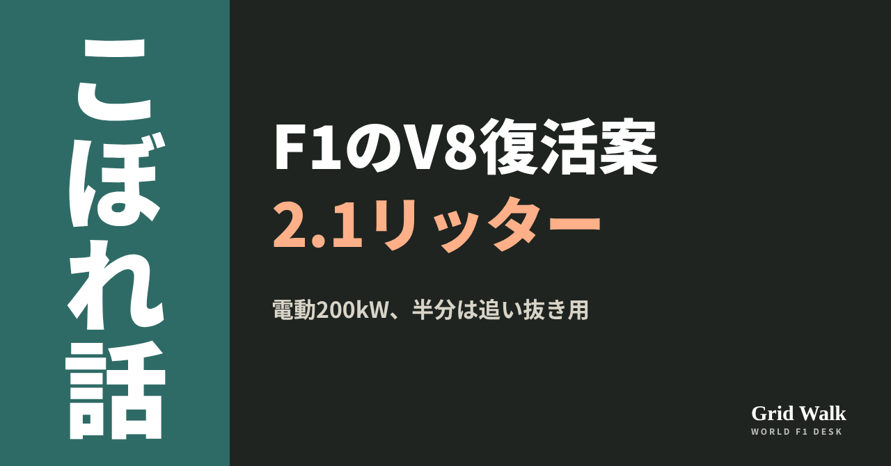<button class="cp dl" data-img="img/v8-engine-proposal-20261117.png" data-name="v8-engine-proposal-20261117_見出し画像.png">ダウンロード</button></li>
<li class="st"><div class="hd"><span class="no">2</span><b>タイトル</b></div><div class="bx" id="p2t">F1のV8復活案は2.1リッター　電動200kW、半分は追い抜き用</div><button class="cp" data-plain="p2t">タイトルをコピー</button></li>
<li class="st"><div class="hd"><span class="no">3</span><b>本文</b></div><div class="bx tall" id="p2r"><p>F1のエンジンをV8に戻す。その案の数字が見えてきました。イギリスのThe Raceは11月16日、その日（月曜）に開かれるFIAとエンジンメーカーの集まりで、新しいパワーユニットの正式な案が話し合われると伝えました。中身は、2.1リッターのV8ターボに200kWの電気モーターを組み合わせるものです。サイトの要約は https://f1gridwalk.github.io/news/en-therace-v8-engine-proposal/ にあります。</p><p>The Raceの元の記事と、V8時代や車の重さの解説へのリンクはサイトで → <a href="https://f1gridwalk.github.io/lens/v8-engine-proposal-20261117/?utm_source=note&amp;utm_campaign=v8-engine-proposal-20261117">https://f1gridwalk.github.io/lens/v8-engine-proposal-20261117/?utm_source=note&amp;utm_campaign=v8-engine-proposal-20261117</a></p><h2>いまのV6に、気筒を2つ足す</h2><p>The Raceによると、新しいV8は、いまの1.6リッターV6に気筒を2つ足して作ります。燃焼エンジンを一から設計し直す費用を避けるためです。ターボは小さくし、過給圧も下げます。</p><p>電気の部分は、いまの350kWより小さくなります。案は200kWのモーターで、いつでも使えるのは100kW。残りの100kWは、追い抜きのためのオーバーテイク、またはプッシュ・トゥ・パスの仕組みに回すといいます（プッシュ・トゥ・パスは https://f1gridwalk.github.io/deep/rules/push-to-pass/ ）。</p><p>サイトの用語集では、これまで3.0リッターのターボV8に100kWのモーター、という9月の報道を紹介してきました（ https://f1gridwalk.github.io/deep/rules/v8-era/ ）。今回の案は排気量が小さく、いつでも使える電気は同じ100kWです。一方で、外の会社が作る共通の土台のパワーユニットをメーカーが手直しする、という考えには反対もあるとThe Raceは書いています。メーカーは、パワーユニットで差をつけられる形を残したいといいます。</p><h2>ねらいは、安く、軽く</h2><p>FIAのモハメド・ビン・スライエム会長は10月、費用についてこう話しました。</p><blockquote><p>「単純にすれば、値段を半分にできる」「研究開発が半分になれば、単純になったぶん、作る時間も短くできる」（ビン・スライエム、The Race／イギリス）</p></blockquote><p>車も軽くします。いまの最低重量は768kgで、FIAは今より80kg軽くすることを目指しています。FIAのシングルシーター部門ディレクター、ニコラス・トンバジスは最近、こう話しています。</p><blockquote><p>「必要なものを全部書き出して足し合わせると、700kgをかなり楽に下回れる」（トンバジス、The Race／イギリス）</p></blockquote><p>ターボが残るので、レース中の給油を戻す必要もない、とThe Raceは書いています。トンバジスは、給油を戻すとピットストップの時期がレース前からはっきり決まり、作戦の自由が減ると話しました。ただ、昔のV8のような甲高い音は戻らない、ともThe Raceは書いています（重さの話は https://f1gridwalk.github.io/deep/car-weight/ ）。</p><h2>2030年か、2031年か</h2><p>いまの規則は2030年の終わりまでなので、V8は2031年に来る形です。ただ、ビン・スライエム会長は2030年に間に合うよう決めたいと考えている、とThe Raceは伝えています。</p><p>11月17日の時点で、会合の結果についてFIAの発表はまだありません。</p><p>編集部としては、気筒を足すだけのやり方は費用の面でメーカーが受け入れやすく、争点はエンジンの形よりも、いつ始めるかに移っていくと見ています。</p><p><strong>2.1リッターのV8と、半分を追い抜きに回す電気モーター。この組み合わせで、F1のレースはおもしろくなると思いますか？</strong></p><p>━━━━━━━━━━</p><p><strong>F1 Grid Walk では、世界のF1ニュースを毎日日本語でまとめています。</strong></p><p>海外の記事の要約を、毎日載せています。</p><p><a href="https://f1gridwalk.github.io/">https://f1gridwalk.github.io/</a></p><p>ほかの海外記事も読みたい方は、F1 Grid Walkへ。</p><p><a href="https://f1gridwalk.github.io/lens/v8-engine-proposal-20261117/">https://f1gridwalk.github.io/lens/v8-engine-proposal-20261117/</a></p><p>━━━━━━━━━━</p><p><a href="https://www.the-race.com/formula-1/f1-poised-to-take-crucial-step-towards-v8-engines-return/">出典：The Race（イギリス）</a></p></div><button class="cp" data-rich="p2r">本文をコピー</button></li>
<li class="st"><div class="hd"><span class="no">4</span><b>ハッシュタグ</b></div><div class="bx" id="p2h">#F1 #F1jp #V8 #パワーユニット #FIA #エンジン規則 #F1こぼれ話 #OFFGRID</div><button class="cp" data-plain="p2h">タグをコピー</button></li>
</ol><h3 class="xh">X</h3><ol class="steps">
<li class="st im"><div class="hd"><b>X用の画像</b><em>画像</em></div>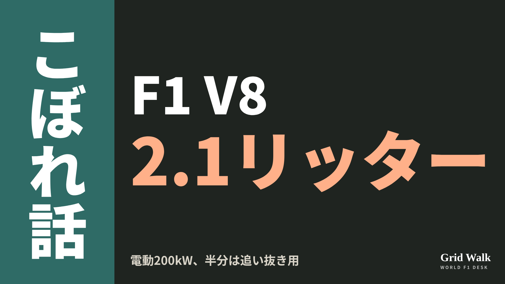<button class="cp dl" data-img="img/x_v8-engine-proposal-20261117.png" data-name="x_v8-engine-proposal-20261117.png">ダウンロード</button></li>
<li class="st"><div class="hd"><b>① noteをシェアするときの文</b></div><div class="bx" id="p2x0">F1のV8復活案は、今のV6に2気筒を足した2.1リッターに電動200kW。そのうち100kWは追い抜き用だと英The Raceが報じました。noteにまとめました #F1jp #V8</div><button class="cp" data-plain="p2x0">コピー</button></li>
<li class="st"><div class="hd"><b>② ①への返信</b></div><div class="bx" id="p2x1">ほかの海外記事も読みたい方は、F1 Grid Walkへ。
https://f1gridwalk.github.io/lens/v8-engine-proposal-20261117/?utm_source=x&amp;utm_campaign=v8-engine-proposal-20261117</div><button class="cp" data-plain="p2x1">コピー</button></li>
<li class="st"><div class="hd"><b>③ ②への返信</b></div><div class="bx" id="p2x2">毎日の海外F1ニュースは、日本語でこちらにまとめています。
https://f1gridwalk.github.io/</div><button class="cp" data-plain="p2x2">コピー</button></li>
</ol></section><section class="part" id="p3"><h2><span class="tag">OFF GRID</span>アロンソがダカールへ　「F1とダカールに同じ年に挑みたかった」</h2><p class="sub">サイトに公開：19:47</p><ol class="steps">
<li class="st im"><div class="hd"><span class="no">1</span><b>見出し画像</b><em>画像</em></div>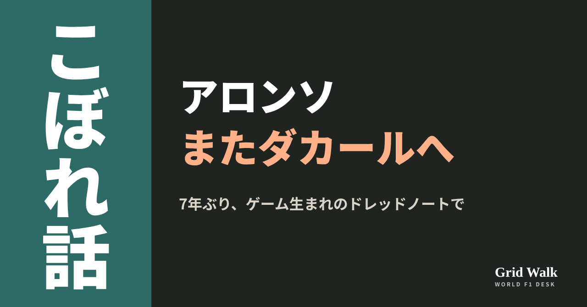<button class="cp dl" data-img="img/alonso-dakar-2027-20261117.png" data-name="alonso-dakar-2027-20261117_見出し画像.png">ダウンロード</button></li>
<li class="st"><div class="hd"><span class="no">2</span><b>タイトル</b></div><div class="bx" id="p3t">アロンソがダカールへ　「F1とダカールに同じ年に挑みたかった」</div><button class="cp" data-plain="p3t">タイトルをコピー</button></li>
<li class="st"><div class="hd"><span class="no">3</span><b>本文</b></div><div class="bx tall" id="p3r"><p>アストンマーティンは11月17日、フェルナンド・アロンソが2027年1月のダカール・ラリーに出ると発表しました。車はアストンマーティンのドレッドノート。トヨタで走った2020年以来、7年ぶりのダカールです。</p><p>アストンマーティンの発表とThe Raceの記事へのリンク、ダカール・ラリーの用語解説はサイトで → <a href="https://f1gridwalk.github.io/lens/alonso-dakar-2027-20261117/?utm_source=note&amp;utm_campaign=alonso-dakar-2027-20261117">https://f1gridwalk.github.io/lens/alonso-dakar-2027-20261117/?utm_source=note&amp;utm_campaign=alonso-dakar-2027-20261117</a></p><blockquote><p>「F1をアストンマーティン・アラムコで続けると決めたあと、ダカールのことをよく考えた」「結局、決断はシンプルになった。挑戦を丸ごと受け止めて、F1とダカール・ラリーに同じ年に挑みたかった」（アロンソ、アストンマーティン公式）</p></blockquote><h2>ゲームの中の車が、本物の砂漠へ</h2><p>アストンマーティン公式によると、ドレッドノートは、もともとゲーム『コール オブ デューティ モダン・ウォーフェア4』のためだけに考えられた、画面の中だけの軍用車でした。その名のラリーレイド車を作ったのはイギリスのプロドライブで、大会でも3台すべてを走らせます。The Raceによると、プロドライブは今年のダカールをダチアと組んで勝っています。</p><blockquote><p>「われわれはこうした挑戦から逃げず、受け止める」（アストンマーティンのエイドリアン・ホールマークCEO、アストンマーティン公式）</p></blockquote><h2>仲間はローブとモラエス、隣にはまたコマ</h2><p>1台はWRCで9回王者のセバスチャン・ローブ。ダカールではステージ28勝、表彰台5回ですが、総合優勝はまだありません。ナビゲーターはファビアン・ルルカンです。もう1台は、2023年に初めてのダカールで3位に入り、2025年の世界ラリーレイド選手権で王者になったルーカス・モラエスで、ナビゲーターはパブロ・モレノ。アロンソの隣には2020年と同じく、ダカールの二輪部門で5回勝ったマルク・コマが座ります。</p><p>The Raceは2020年の結果を振り返っています。トヨタ・ガズー・レーシングのハイラックスで総合13位、優勝者から4時間43分遅れ。そのうち1時間あまりは、修理に追われた2つのステージで失ったものでした。第8ステージでは2位に入りました。ナセル・アルアティヤは2022年にこう話しています。</p><blockquote><p>「彼は本当に、本当に才能がある。初めてのダカールで速さを見せた」「ダカールの歴史を見れば、4年、5年、6年くらいの経験を積んで、それで勝てるんだ」（アルアティヤ、The Race／イギリス）</p></blockquote><h2>1か月前は慎重だった</h2><p>The Raceによると、アロンソは10月の時点では、F1とダカールの2つを同じ年に入れるのは難しいと話し、復帰の話を抑えていました。2027年もアストンマーティンでF1を走ると決めたことで、両方に挑むことにしたといいます。</p><p>大会の舞台も変わりました。The Raceによると、中東の安全面の事情で、2027年のダカールはサウジアラビアからポルトガルとモロッコに移っています。大会は1月9〜23日で、アストンマーティン公式によると、9日にポルトガルのロウレで129kmのプロローグを走り、1月23日にモロッコのマラケシュでゴールします。F1公式によると、2027年のプレシーズンテストは2月24〜27日のバーレーンで、全24戦です。ダカールの仕組みと歴史は、ルールブック https://f1gridwalk.github.io/deep/rules/dakar/ で。</p><blockquote><p>「F1は今も僕の最優先だ。でも僕はレーシングドライバーで、こういう挑戦があるから競うのが好きなんだ」（アロンソ、アストンマーティン公式）</p></blockquote><p>編集部としては、見どころはダカールの順位だけでなく、マラケシュのゴールからバーレーンのテストまでの約1か月だと見ています。アロンソ自身が、F1が最優先だと言い切っているからです。</p><p><strong>7年ぶりのダカールで、アロンソは2020年の13位を上回れると思いますか？</strong></p><p>━━━━━━━━━━</p><p><strong>F1 Grid Walk では、世界のF1ニュースを毎日日本語でまとめています。</strong></p><p>海外の記事の要約を、毎日載せています。</p><p><a href="https://f1gridwalk.github.io/">https://f1gridwalk.github.io/</a></p><p>ほかの海外記事も読みたい方は、F1 Grid Walkへ。</p><p><a href="https://f1gridwalk.github.io/lens/alonso-dakar-2027-20261117/">https://f1gridwalk.github.io/lens/alonso-dakar-2027-20261117/</a></p><p>━━━━━━━━━━</p><p><a href="https://www.the-race.com/formula-1/fernando-alonso-2027-dakar-rally-new-aston-martin-project/">出典：The Race（イギリス）</a></p><p><a href="https://www.astonmartinf1.com/en-GB/news/announcement/fernando-alonso-returns-to-the-dakar-with-aston-martin-dreadnought">出典：アストンマーティン公式（イギリス）</a></p><p><a href="https://www.formula1.com/en/latest/article/formula-1-reveals-calendar-for-2027-season-with-10-sprint-events.5J8ePLyjRuMyWEIDNUKgY4">出典：F1公式サイト（イギリス）</a></p></div><button class="cp" data-rich="p3r">本文をコピー</button></li>
<li class="st"><div class="hd"><span class="no">4</span><b>ハッシュタグ</b></div><div class="bx" id="p3h">#F1 #F1jp #アロンソ #アストンマーティン #ダカールラリー #ローブ #2027年 #F1こぼれ話 #OFFGRID</div><button class="cp" data-plain="p3h">タグをコピー</button></li>
</ol><h3 class="xh">X</h3><ol class="steps">
<li class="st im"><div class="hd"><b>X用の画像</b><em>画像</em></div>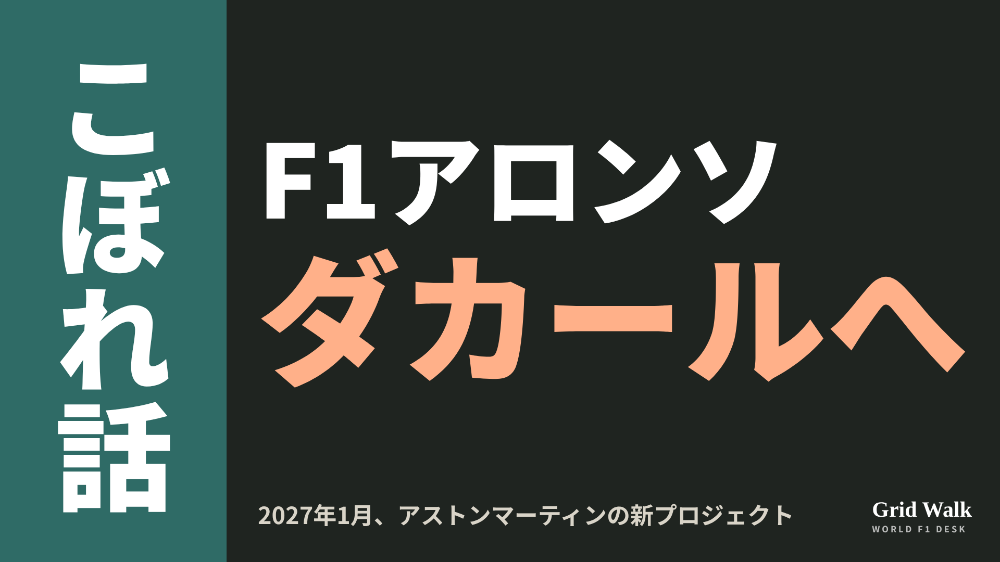<button class="cp dl" data-img="img/x_alonso-dakar-2027-20261117.png" data-name="x_alonso-dakar-2027-20261117.png">ダウンロード</button></li>
<li class="st"><div class="hd"><b>① noteをシェアするときの文</b></div><div class="bx" id="p3x0">アロンソが2027年1月のダカール・ラリーに、アストンマーティンの新プロジェクトから出ます。F1の開幕前テストの約1か月前です。noteにまとめました #F1jp #アロンソ #ダカール</div><button class="cp" data-plain="p3x0">コピー</button></li>
<li class="st"><div class="hd"><b>② ①への返信</b></div><div class="bx" id="p3x1">ほかの海外記事も読みたい方は、F1 Grid Walkへ。
https://f1gridwalk.github.io/lens/alonso-dakar-2027-20261117/?utm_source=x&amp;utm_campaign=alonso-dakar-2027-20261117</div><button class="cp" data-plain="p3x1">コピー</button></li>
<li class="st"><div class="hd"><b>③ ②への返信</b></div><div class="bx" id="p3x2">毎日の海外F1ニュースは、日本語でこちらにまとめています。
https://f1gridwalk.github.io/</div><button class="cp" data-plain="p3x2">コピー</button></li>
</ol></section><section class="part" id="p4"><h2><span class="tag">OFF GRID</span>アロンソ「来年を信じている」　ホンダの新エンジンはダイノで試験中</h2><p class="sub">サイトに公開：19:48</p><ol class="steps">
<li class="st im"><div class="hd"><span class="no">1</span><b>見出し画像</b><em>画像</em></div>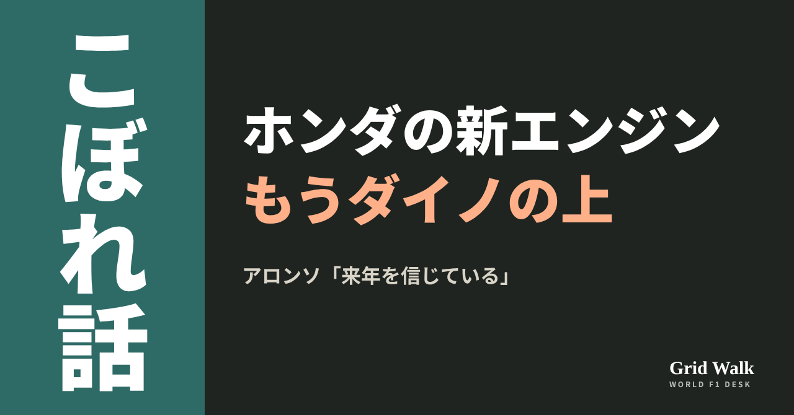<button class="cp dl" data-img="img/alonso-honda-dyno-20261117.png" data-name="alonso-honda-dyno-20261117_見出し画像.png">ダウンロード</button></li>
<li class="st"><div class="hd"><span class="no">2</span><b>タイトル</b></div><div class="bx" id="p4t">アロンソ「来年を信じている」　ホンダの新エンジンはダイノで試験中</div><button class="cp" data-plain="p4t">タイトルをコピー</button></li>
<li class="st"><div class="hd"><span class="no">3</span><b>本文</b></div><div class="bx tall" id="p4r"><p>アストンマーティンのフェルナンド・アロンソが、来季のホンダのエンジンに信頼を口にしました。まったく新しいエンジンが、もうダイノ（エンジンの試験台）で回っているといいます。イギリスのPlanetF1が11月16日に伝えています。サイトの要約は https://f1gridwalk.github.io/news/en-planetf1-alonso-honda-vow/ にあります。</p><p>元の記事へのリンクと、ホンダの今季を追ったコラムへの案内はサイトで → <a href="https://f1gridwalk.github.io/lens/alonso-honda-dyno-20261117/?utm_source=note&amp;utm_campaign=alonso-honda-dyno-20261117">https://f1gridwalk.github.io/lens/alonso-honda-dyno-20261117/?utm_source=note&amp;utm_campaign=alonso-honda-dyno-20261117</a></p><h2>新しいエンジンは、もうダイノの上</h2><p>PlanetF1によると、アロンソがこう話したのはメキシコでのことです。今季のアストンマーティン・ホンダは、信頼性の問題とパワー不足に何度も苦しんできました。F1公式によると、チームはサンパウロGPを終えてコンストラクターズ10位、7点です。</p><blockquote><p>「僕たちはみんなで一緒に、これに取り組んでいる」「パワーユニットの部門全体が、問題や課題を分かっていると思う」（アロンソ、PlanetF1／イギリス）</p></blockquote><blockquote><p>「来年はまったく新しいエンジンで、いまダイノで試験している」「だから、そう、信じる気持ちはあるし、来年を信じている。まったく新しいプロジェクトだから」（同）</p></blockquote><p>アロンソは今季を、チームにとって「とても、とても厳しい最初のシーズン」と呼びました。それでも、車体についてはこう話しています。</p><blockquote><p>「車はシャシーの面では、本当に正しい方向に進んでいる」「多くのことを直せると、僕たちはまだ信じている」（アロンソ、PlanetF1／イギリス）</p></blockquote><p>アロンソは、2027年もこのチームで走る契約をすでに結んでいます（PlanetF1）。</p><h2>雨のインテルラゴスで見えたもの</h2><p>その車体の手ごたえが見えたのが、11月8日のサンパウロGPでした。PlanetF1によると、アロンソは雨の予選で今季初めてQ3に進み、決勝の序盤はフェラーリの2台と同じ集団を走り、ルイス・ハミルトンを抜いて、シャルル・ルクレールに迫りました。路面が乾くとトップ10は守れませんでしたが、後半にまた雨が降ると、ペースは悪くなかったといいます。レースを振り返って、アロンソはこう話しました。</p><blockquote><p>「雨のほうが良かったのは確かだ。乾いたときよりね」「全体としては、ペースはかなり悪くなかったと思う。うれしい驚きだった」（アロンソ、PlanetF1／イギリス）</p></blockquote><blockquote><p>「もちろん、直線のスピードはまだかなり足りない。それを埋め合わせるのは難しい」「直線で多くを失っていることを考えると、今日の車はコーナーではすばらしかったということだ」（同）</p></blockquote><p>雨がホンダの弱みを隠した面があることは、HRCの折原伸太郎GM自身が認めています。</p><blockquote><p>「濡れた路面は、エンジンの性能と、エネルギーの出し方の一部で、私たちの弱みを隠してくれます」（折原、PlanetF1／イギリス）</p></blockquote><blockquote><p>「でも、濡れた路面ではドライバビリティ（扱いやすさ）がとても大事で、ドライバーから意見をもらいました」「ある部分では、まだドライバビリティを良くしないといけません」（同）</p></blockquote><p>同じ週末には、ランス・ストロールの車に2日続けてバッテリーの不具合が出ています（コラム https://f1gridwalk.github.io/lens/honda-stroll-battery-20261113/ ）。ホンダが来季に入れられる追加の改良の枠は、11月11日のコラム https://f1gridwalk.github.io/lens/aduo-third-review-honda-20261111/ にまとめました。</p><p>編集部としては、アロンソが期待をかけているのは今のエンジンの手直しではなく、まったく新しいエンジンだという点が大事だと見ています。車体の良さは雨の日に見えましたが、直線の差は乾いた路面でこそはっきり出ます。その答えが分かるのは、ダイノの上のエンジンがコースに出る来季になりそうです。</p><p><strong>来季のアストンマーティン・ホンダ、乾いた路面でも前を走れると思いますか？</strong></p><p>━━━━━━━━━━</p><p><strong>F1 Grid Walk では、世界のF1ニュースを毎日日本語でまとめています。</strong></p><p>海外の記事の要約を、毎日載せています。</p><p><a href="https://f1gridwalk.github.io/">https://f1gridwalk.github.io/</a></p><p>ほかの海外記事も読みたい方は、F1 Grid Walkへ。</p><p><a href="https://f1gridwalk.github.io/lens/alonso-honda-dyno-20261117/">https://f1gridwalk.github.io/lens/alonso-honda-dyno-20261117/</a></p><p>━━━━━━━━━━</p><p><a href="https://www.planetf1.com/news/fernando-alonso-delivers-honda-vow-aston-martin-claim">出典：PlanetF1（イギリス）</a></p></div><button class="cp" data-rich="p4r">本文をコピー</button></li>
<li class="st"><div class="hd"><span class="no">4</span><b>ハッシュタグ</b></div><div class="bx" id="p4h">#F1 #F1jp #アロンソ #アストンマーティン #ホンダ #折原伸太郎 #ラスベガスGP #F1こぼれ話 #OFFGRID</div><button class="cp" data-plain="p4h">タグをコピー</button></li>
</ol><h3 class="xh">X</h3><ol class="steps">
<li class="st im"><div class="hd"><b>X用の画像</b><em>画像</em></div>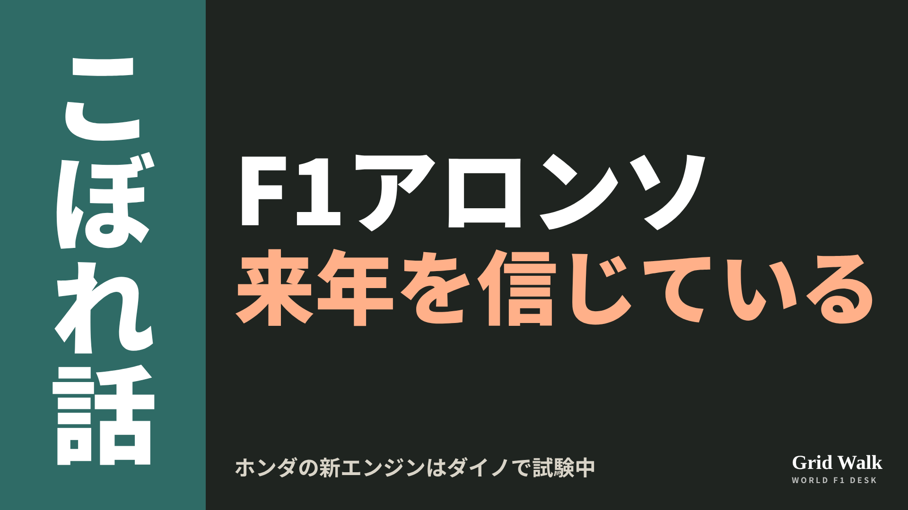<button class="cp dl" data-img="img/x_alonso-honda-dyno-20261117.png" data-name="x_alonso-honda-dyno-20261117.png">ダウンロード</button></li>
<li class="st"><div class="hd"><b>① noteをシェアするときの文</b></div><div class="bx" id="p4x0">アロンソは、ホンダの来季のエンジンはもうダイノで試験中だと話し「来年を信じている」。noteにまとめました #F1jp #アロンソ #ホンダ</div><button class="cp" data-plain="p4x0">コピー</button></li>
<li class="st"><div class="hd"><b>② ①への返信</b></div><div class="bx" id="p4x1">ほかの海外記事も読みたい方は、F1 Grid Walkへ。
https://f1gridwalk.github.io/lens/alonso-honda-dyno-20261117/?utm_source=x&amp;utm_campaign=alonso-honda-dyno-20261117</div><button class="cp" data-plain="p4x1">コピー</button></li>
<li class="st"><div class="hd"><b>③ ②への返信</b></div><div class="bx" id="p4x2">毎日の海外F1ニュースは、日本語でこちらにまとめています。
https://f1gridwalk.github.io/</div><button class="cp" data-plain="p4x2">コピー</button></li>
</ol></section><section class="part" id="p5"><h2><span class="tag">OFF GRID</span>FIAの75歳の年齢上限、12月の総会でなくす案　任期上限に続き</h2><p class="sub">サイトに公開：19:49</p><ol class="steps">
<li class="st im"><div class="hd"><span class="no">1</span><b>見出し画像</b><em>画像</em></div>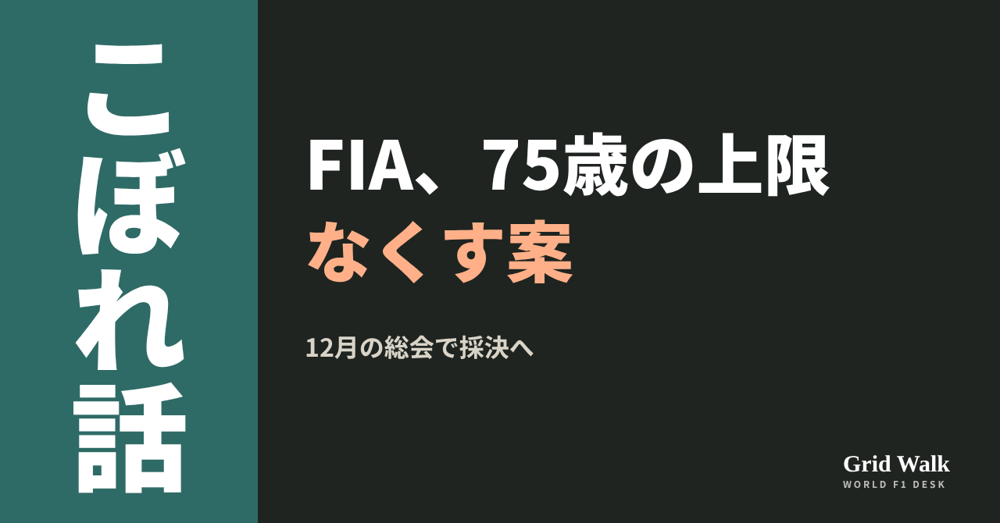<button class="cp dl" data-img="img/fia-age-limit-20261117.png" data-name="fia-age-limit-20261117_見出し画像.png">ダウンロード</button></li>
<li class="st"><div class="hd"><span class="no">2</span><b>タイトル</b></div><div class="bx" id="p5t">FIAの75歳の年齢上限、12月の総会でなくす案　任期上限に続き</div><button class="cp" data-plain="p5t">タイトルをコピー</button></li>
<li class="st"><div class="hd"><span class="no">3</span><b>本文</b></div><div class="bx tall" id="p5r"><p>FIAの役員の選挙には、75歳を超えた人は会長の陣営の一員として立候補できない、という年齢の上限があります。これをなくす案が、12月の総会に出されます。イギリスのBBCスポーツが11月9日、提案の文書を見たとして報じ、イギリスのPlanetF1も16日にその内容を伝えました。</p><p>PlanetF1の記事の要約と元の記事へのリンクはサイトで → <a href="https://f1gridwalk.github.io/lens/fia-age-limit-20261117/?utm_source=note&amp;utm_campaign=fia-age-limit-20261117">https://f1gridwalk.github.io/lens/fia-age-limit-20261117/?utm_source=note&amp;utm_campaign=fia-age-limit-20261117</a></p><p>PlanetF1によると、対象は会長をふくむすべての役員です。案は総会で賛成が得られたときだけ効力を持ちます。総会は上海で開かれると、オランダのGPblogは書いています。サイトの要約は https://f1gridwalk.github.io/news/en-planetf1-fia-age-limit-proposal/ にあります。</p><h2>70歳で始まり、75歳へ</h2><p>PlanetF1とGPblogによると、年齢の上限は2023年に70歳で作られ、2024年に75歳へ引き上げられました。どちらもモハメド・ビン・スライエム会長の1期目のことです。GPblogは、会長は70歳の上限を作ったとき、統治と説明責任を高めるものだと話していたと伝えています。</p><p>FIA公式によると、6月25日にマカオで開かれた臨時総会で、FIAの各機関の任期の上限がなくなりました。同じ総会で、会長に立候補するための条件は厳しくされています。ビン・スライエム会長は2021年に初めて選ばれ、2025年12月の総会で無投票で再選されました。イギリスのSky Sportsによると、2期目の任期は2029年までです。</p><h2>FIAの説明</h2><p>PlanetF1によると、BBCスポーツが見た提案の文書には、こう書かれているといいます。</p><blockquote><p>「年齢の上限は、しかるべき機関が選べる、資格のある候補者の数を減らしかねない」（FIAの提案文書、BBCスポーツ／イギリス）</p></blockquote><p>FIAの広報は、BBCスポーツにこう説明しました。フランスのF1iが伝えています。</p><blockquote><p>「役員の年齢の上限をなくす案は、FIAを、BBCのような組織と同じ形にするものだ。BBCの会長は74歳だ」「年齢の上限は、生年月日だけを理由に候補者を外してしまう」「最終的には、FIAのしかるべき機関が、ふさわしいと考える役員を選ぶ権限をすべて持ち続ける」（FIA広報、BBCスポーツ／イギリス）</p></blockquote><p>F1iによると、案は規約にしたがって、世界評議会で総会に出すことが認められたものです。</p><h2>並べておきたい論点</h2><p>一方でGPblogは、会長がずっとその座にいられる道を作っているのではないかと、批判する人たちが心配していると伝えています。GPblogによると、2025年の選挙では、会長に挑もうとした人のうち、元レーシングドライバーと元FIAスチュワードが、選挙の決まりのために立候補できませんでした。元レーシングドライバーのほうは、選挙の進め方をめぐってフランスで裁判を起こしています。また、スポーツ担当の副会長だったロバート・リードは2025年4月、統治の水準が下がったことを理由のひとつに挙げて辞めました。</p><p>論点は大きく2つです。ひとつは、生まれた年だけで一律に候補から外すのは公平か、経験のある人を生かせるか、という点。もうひとつは、任期の上限に続いて年齢の上限もなくなったとき、同じ人が長く続くことへの歯止めがどこに残るのか、という点です。F1iは、会長は65歳で、今の75歳の上限をすぐに気にする立場ではないと書いています。</p><p>編集部としては、12月の総会でどれだけの票が集まるか、そして各国の加盟クラブが賛否をどう説明するかが、この議論の中身を映すと見ています。</p><p><strong>選挙に出られる年齢に上限を設けること。あなたは必要だと思いますか？</strong></p><p>━━━━━━━━━━</p><p><strong>F1 Grid Walk では、世界のF1ニュースを毎日日本語でまとめています。</strong></p><p>海外の記事の要約を、毎日載せています。</p><p><a href="https://f1gridwalk.github.io/">https://f1gridwalk.github.io/</a></p><p>ほかの海外記事も読みたい方は、F1 Grid Walkへ。</p><p><a href="https://f1gridwalk.github.io/lens/fia-age-limit-20261117/">https://f1gridwalk.github.io/lens/fia-age-limit-20261117/</a></p><p>━━━━━━━━━━</p><p><a href="https://www.planetf1.com/news/fia-major-age-limits-rule-change-to-be-proposed">出典：PlanetF1（イギリス）</a></p><p><a href="https://f1i.com/news/578034-ben-sulayem-eyes-another-controversial-fia-rule-change.html">出典：F1i（フランス）</a></p><p><a href="https://www.gpblog.com/en/news/ben-sulayem-wants-to-change-the-rules-again-to-stay-in-office-longer">出典：GPblog（オランダ）</a></p><p><a href="https://api.fia.com/news/fia-extraordinary-general-assemblies-june-2026">出典：FIA公式サイト（国際）</a></p><p><a href="https://www.skysports.com/f1/news/12040/13482506/mohammed-ben-sulayem-re-elected-as-fia-president-on-second-four-year-term-to-head-world-motorsport-to-2029">出典：Sky Sports（イギリス）</a></p></div><button class="cp" data-rich="p5r">本文をコピー</button></li>
<li class="st"><div class="hd"><span class="no">4</span><b>ハッシュタグ</b></div><div class="bx" id="p5h">#F1 #F1jp #FIA #ビン・スライエム #FIA会長 #モータースポーツ #F1こぼれ話 #OFFGRID</div><button class="cp" data-plain="p5h">タグをコピー</button></li>
</ol><h3 class="xh">X</h3><ol class="steps">
<li class="st im"><div class="hd"><b>X用の画像</b><em>画像</em></div>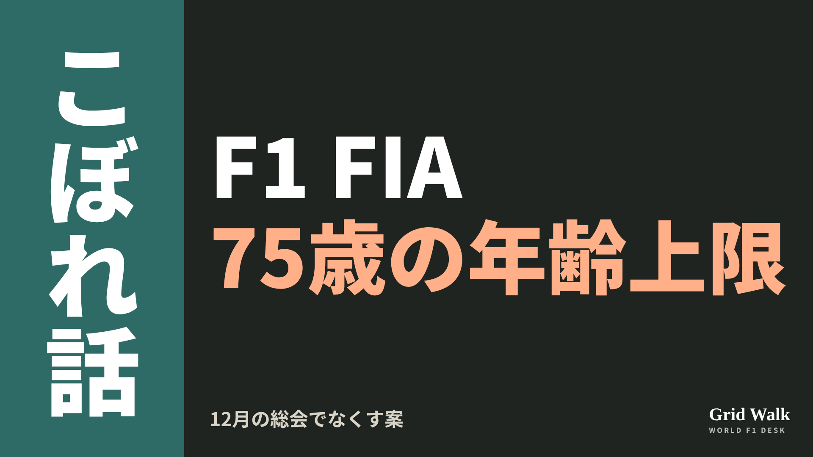<button class="cp dl" data-img="img/x_fia-age-limit-20261117.png" data-name="x_fia-age-limit-20261117.png">ダウンロード</button></li>
<li class="st"><div class="hd"><b>① noteをシェアするときの文</b></div><div class="bx" id="p5x0">FIAが、役員に立候補できる75歳の上限をなくす案を12月の総会に出す、とBBCスポーツが報じました。noteにまとめました #F1jp #FIA</div><button class="cp" data-plain="p5x0">コピー</button></li>
<li class="st"><div class="hd"><b>② ①への返信</b></div><div class="bx" id="p5x1">ほかの海外記事も読みたい方は、F1 Grid Walkへ。
https://f1gridwalk.github.io/lens/fia-age-limit-20261117/?utm_source=x&amp;utm_campaign=fia-age-limit-20261117</div><button class="cp" data-plain="p5x1">コピー</button></li>
<li class="st"><div class="hd"><b>③ ②への返信</b></div><div class="bx" id="p5x2">毎日の海外F1ニュースは、日本語でこちらにまとめています。
https://f1gridwalk.github.io/</div><button class="cp" data-plain="p5x2">コピー</button></li>
</ol></section><section class="part" id="p6"><h2><span class="tag">OFF GRID</span>ハミルトン「終わりにはほど遠い」　F1に5年で5000万ポンド求める</h2><p class="sub">サイトに公開：19:50</p><ol class="steps">
<li class="st im"><div class="hd"><span class="no">1</span><b>見出し画像</b><em>画像</em></div>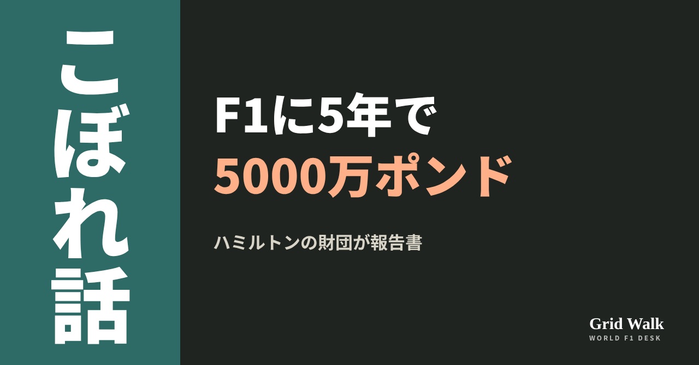<button class="cp dl" data-img="img/hamilton-mission44-report-20261117.png" data-name="hamilton-mission44-report-20261117_見出し画像.png">ダウンロード</button></li>
<li class="st"><div class="hd"><span class="no">2</span><b>タイトル</b></div><div class="bx" id="p6t">ハミルトン「終わりにはほど遠い」　F1に5年で5000万ポンド求める</div><button class="cp" data-plain="p6t">タイトルをコピー</button></li>
<li class="st"><div class="hd"><span class="no">3</span><b>本文</b></div><div class="bx tall" id="p6r"><p>フェラーリのルイス・ハミルトンが創設した財団ミッション44が11月16日、報告書を公表しました。F1とFIA、チーム、その商業パートナーに、この世界で少数派の若者のための新しいお金を、5年で少なくとも5000万ポンド出すよう求めています。ハミルトンはこう話しています。</p><p>ミッション44の報告書と、伝えた記事へのリンクはサイトで → <a href="https://f1gridwalk.github.io/lens/hamilton-mission44-report-20261117/?utm_source=note&amp;utm_campaign=hamilton-mission44-report-20261117">https://f1gridwalk.github.io/lens/hamilton-mission44-report-20261117/?utm_source=note&amp;utm_campaign=hamilton-mission44-report-20261117</a></p><blockquote><p>「これまでやってきたことを誇りに思う。でも、終わりにはほど遠い」「変われることは示した。今は、もっと先へ進まないといけない」（ハミルトン、Sky Sports／イギリス）</p></blockquote><p>報告書の名前は Igniting Inclusion。黒人、女性、低所得の家庭の若者が、F1の世界でどこまで進めたのかを、2021年のハミルトン・コミッションから5年の節目に見直したものです（Sky Sports）。第21戦ラスベガスGPの直前です。</p><h2>歩みは認め、数字がないと指摘</h2><p>報告書は、まず進んだ点を挙げています。F1とFIA、当時の全10チームが2024年11月に多様性と包摂の憲章に署名したこと。F1の報告では、F1やチームなどの教育や地域の活動が2025年に71か国の50万人超の若者に届いたことなどです。</p><p>そのうえで、肝心のところが測れていないといいます。</p><blockquote><p>「この取り組みが、誰がモータースポーツに入り、昇進し、とどまるのかを変えたのかどうか、このスポーツはまだ示せていない」（ミッション44の報告書）</p></blockquote><p>ハミルトンも前書きで、同じ点を突いています。</p><blockquote><p>「扉は開いた。でも、何人がそこを通り、何人がとどまるのかを数えることは、まだ覚えていない」「このスポーツは、1000分の1秒まで性能を測る」「これだって測れるはずだ」（ハミルトン、ミッション44の報告書）</p></blockquote><h2>3つの提言と5000万ポンド</h2><p>提言は3つです。1つ目は、F1とFIA、11チームが、入った人、昇進した人、辞めた人を、性別、民族、社会経済的な背景ごとに毎年同じ形で報告し、第三者がスポーツ全体の数字として公表すること。2つ目は、見習いの給料から始めて、人材への投資をコストキャップ（予算上限）の外に出すことと、2026年の水準に上乗せする新しいお金を5年で少なくとも5000万ポンド出すこと。3つ目は、各チームが、給料が出て応募しやすい若手向けの枠の数を毎年公表し、2030年までに数千の道を作ることです。</p><p>報告書によると、あるチームでは、新卒エンジニアの募集1件に8000件近い応募があったそうです。ハミルトンは、こうも述べています。</p><blockquote><p>「機会がなければ、刺激には意味がない」（ハミルトン、ミッション44）</p></blockquote><p>ミッション44がイギリス、アメリカ、ブラジルのF1ファン約3000人に聞いた調査では、55%がこのスポーツは包摂を実行するより語るほうが多いと答え、64%が指導部はもっとやるべきだと答えました（ブラジルでは78%）。</p><p>F1の広報担当は、こう述べています。</p><blockquote><p>「F1チームやFIA、このスポーツの幅広い関係者とともに、取り組んでいく」（F1の広報担当、Sky Sports／イギリス）</p></blockquote><p>Sky Sportsによると、F1はエンジニア奨学金を少なくとも2028/29年まで延ばし、240万ポンドを追加するとしています。</p><p>編集部としては、5000万ポンドという額より、コストキャップの扱いのほうが大きな論点になると見ています。報告書によると、見習いの給料や研修、人材育成の費用は、いまはコストキャップの内側に数えられています。報告書は、見習いの給料を外す案を2027年の規則づくりで合意し、2028年シーズンから適用する日程を示しています。</p><p><strong>若い人材への投資を、予算上限の外に出す。この案に、あなたは賛成ですか？</strong></p><p>━━━━━━━━━━</p><p><strong>F1 Grid Walk では、世界のF1ニュースを毎日日本語でまとめています。</strong></p><p>海外の記事の要約を、毎日載せています。</p><p><a href="https://f1gridwalk.github.io/">https://f1gridwalk.github.io/</a></p><p>ほかの海外記事も読みたい方は、F1 Grid Walkへ。</p><p><a href="https://f1gridwalk.github.io/lens/hamilton-mission44-report-20261117/">https://f1gridwalk.github.io/lens/hamilton-mission44-report-20261117/</a></p><p>━━━━━━━━━━</p><p><a href="https://mission44.org/igniting-inclusion-report">出典：ミッション44（イギリス）</a></p><p><a href="https://mission44.org/wp-content/uploads/2026/11/Igniting-Inclusion-Report.pdf">出典：ミッション44（イギリス）</a></p><p><a href="https://mission44.org/f1-risks-losing-the-race-for-talent">出典：ミッション44（イギリス）</a></p><p><a href="https://www.skysports.com/f1/news/13612897/lewis-hamilton-says-work-improving-diversity-in-f1-nowhere-near-finished-as-mission-44-outlines-recommendations-for-further-change">出典：Sky Sports（イギリス）</a></p><p><a href="https://www.formula1.com/en/racing/2026">出典：F1公式サイト（イギリス）</a></p></div><button class="cp" data-rich="p6r">本文をコピー</button></li>
<li class="st"><div class="hd"><span class="no">4</span><b>ハッシュタグ</b></div><div class="bx" id="p6h">#F1 #F1jp #ハミルトン #ミッション44 #多様性 #フェラーリ #ラスベガスGP #F1こぼれ話 #OFFGRID</div><button class="cp" data-plain="p6h">タグをコピー</button></li>
</ol><h3 class="xh">X</h3><ol class="steps">
<li class="st im"><div class="hd"><b>X用の画像</b><em>画像</em></div>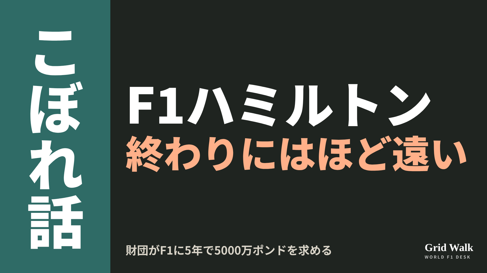<button class="cp dl" data-img="img/x_hamilton-mission44-report-20261117.png" data-name="x_hamilton-mission44-report-20261117.png">ダウンロード</button></li>
<li class="st"><div class="hd"><b>① noteをシェアするときの文</b></div><div class="bx" id="p6x0">ハミルトンの財団ミッション44が、F1に5年で少なくとも5000万ポンドの新しい投資を求めました。ハミルトンは「終わりにはほど遠い」。noteにまとめました #F1jp #ハミルトン</div><button class="cp" data-plain="p6x0">コピー</button></li>
<li class="st"><div class="hd"><b>② ①への返信</b></div><div class="bx" id="p6x1">ほかの海外記事も読みたい方は、F1 Grid Walkへ。
https://f1gridwalk.github.io/lens/hamilton-mission44-report-20261117/?utm_source=x&amp;utm_campaign=hamilton-mission44-report-20261117</div><button class="cp" data-plain="p6x1">コピー</button></li>
<li class="st"><div class="hd"><b>③ ②への返信</b></div><div class="bx" id="p6x2">毎日の海外F1ニュースは、日本語でこちらにまとめています。
https://f1gridwalk.github.io/</div><button class="cp" data-plain="p6x2">コピー</button></li>
</ol></section><section class="part" id="p7"><h2><span class="tag">OFF GRID</span>アルピーヌのコラピント「今年のクルマはもうあまり開発していない」</h2><p class="sub">サイトに公開：19:51</p><ol class="steps">
<li class="st im"><div class="hd"><span class="no">1</span><b>見出し画像</b><em>画像</em></div>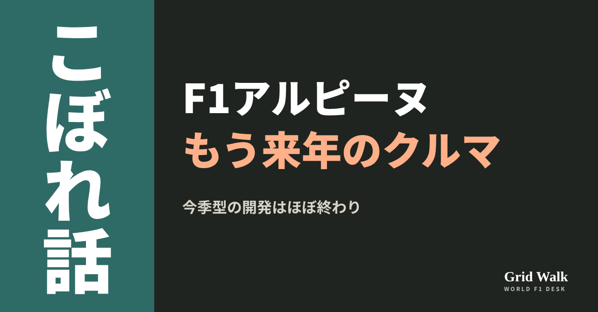<button class="cp dl" data-img="img/colapinto-alpine-2027-focus-20261117.png" data-name="colapinto-alpine-2027-focus-20261117_見出し画像.png">ダウンロード</button></li>
<li class="st"><div class="hd"><span class="no">2</span><b>タイトル</b></div><div class="bx" id="p7t">アルピーヌのコラピント「今年のクルマはもうあまり開発していない」</div><button class="cp" data-plain="p7t">タイトルをコピー</button></li>
<li class="st"><div class="hd"><span class="no">3</span><b>本文</b></div><div class="bx tall" id="p7r"><p>ラスベガスGPを前に、アルピーヌのフランコ・コラピントが、チームの今の優先順位をはっきり口にしました。イギリスのPlanetF1が11月17日に伝えています。</p><p>元の記事へのリンクと、ウィリアムズの同じような選択の話はサイトで → <a href="https://f1gridwalk.github.io/lens/colapinto-alpine-2027-focus-20261117/?utm_source=note&amp;utm_campaign=colapinto-alpine-2027-focus-20261117">https://f1gridwalk.github.io/lens/colapinto-alpine-2027-focus-20261117/?utm_source=note&amp;utm_campaign=colapinto-alpine-2027-focus-20261117</a></p><blockquote><p>「もうかなり、27年に向けて作業していると思う。つまり、僕たちの焦点はすべて、もう来年のクルマにある」「今年のクルマはもうあまり開発していない。だから焦点は27年だ」（コラピント、PlanetF1／イギリス）</p></blockquote><p>PlanetF1によると、アルピーヌは今季最後の3連戦に、新しい部品を持ち込む見込みはありません。サイトの要約は https://f1gridwalk.github.io/news/en-planetf1-colapinto-alpine-2027-focus/ にあります。</p><h2>6位の上に45点、下に38点</h2><p>F1公式によると、サンパウロGPを終えて、アルピーヌはコンストラクターズ6位の69点です。5位のレーシングブルズは114点で45点上、7位のハースは31点で38点下にいます。その上の4チームは、メルセデス652点、フェラーリ510点、レッドブル415点、マクラーレン398点と、大きく離れています。</p><p>PlanetF1は、上位4チームがたいていの週末でトップ10のうち7つか8つの席を取るため、順位が動く見込みは小さいと書いています。残りのレースに部品を足しても、得るものは少ないという計算です。</p><p>そのぶん、勝負は冬に移ります。</p><blockquote><p>「この時期は、ある意味で開発の競争だ。（シーズンが）終わったあとの2か月ほどのオフを最大限に生かそうとしている」（コラピント、PlanetF1／イギリス）</p></blockquote><blockquote><p>「今あるもので作業して、手にしたものを最大限に引き出そうとしている」（同）</p></blockquote><h2>直近6戦は無得点、それでも前を向く</h2><p>PlanetF1は、2025年の走りを批判されたコラピントが、今季は良くなったと書いています。F1公式ではドライバーズ12位の27点で、チームメートのピエール・ガスリーは10位の42点です。PlanetF1によると、今季は8回入賞しましたが、直近の6戦は点がなく、最後の入賞は9月の第14戦スペインGP（マドリード）でした。</p><p>話は、メキシコで初の王座を決めたメルセデスのアンドレア・キミ・アントネッリにも及びました。アントネッリは、メルセデスでのフル参戦2年目です。</p><blockquote><p>「もちろん、毎レース勝てるクルマも必要で、彼はそれも持っている」「だから、彼にとっては素晴らしいチームと素晴らしいシーズンで、どのドライバーも手にしたいと思うものだ」（コラピント、PlanetF1／イギリス）</p></blockquote><blockquote><p>「それが目標で、ドライバーはみんなそのために努力している」「昨季から大きく前進した。来年はもっと進歩しないといけない」（同）</p></blockquote><p>今季の終盤を来年のための時間にしているのは、アルピーヌだけではありません。ウィリアムズのサインツとアルボンの話は、OFF GRID https://f1gridwalk.github.io/lens/williams-sainz-albon-test-drivers-20261116/ で紹介しました。</p><p>編集部としては、上と下に大きな差がある今のアルピーヌにとって、残り3戦に新しい部品を入れないのは筋の通った選択だと見ています。問われるのは、シーズン後の2か月ほどのオフのあいだに、ほかのチームと比べてどれだけ前進できるかで、その答えが出るのは2027年の開幕です。</p><p><strong>残り3戦を待たずに、来年のクルマにすべてをかけるアルピーヌ。2027年、アルピーヌは上位4チームに近づけると思いますか？</strong></p><p>━━━━━━━━━━</p><p><strong>F1 Grid Walk では、世界のF1ニュースを毎日日本語でまとめています。</strong></p><p>海外の記事の要約を、毎日載せています。</p><p><a href="https://f1gridwalk.github.io/">https://f1gridwalk.github.io/</a></p><p>ほかの海外記事も読みたい方は、F1 Grid Walkへ。</p><p><a href="https://f1gridwalk.github.io/lens/colapinto-alpine-2027-focus-20261117/">https://f1gridwalk.github.io/lens/colapinto-alpine-2027-focus-20261117/</a></p><p>━━━━━━━━━━</p><p><a href="https://www.planetf1.com/alpine/franco-colapinto-alpine-upgrades">出典：PlanetF1（イギリス）</a></p><p><a href="https://www.formula1.com/en/results/2026/team">出典：F1公式サイト（イギリス）</a></p><p><a href="https://www.formula1.com/en/results/2026/drivers">出典：F1公式サイト（イギリス）</a></p><p><a href="https://www.formula1.com/en/racing/2026">出典：F1公式サイト（イギリス）</a></p></div><button class="cp" data-rich="p7r">本文をコピー</button></li>
<li class="st"><div class="hd"><span class="no">4</span><b>ハッシュタグ</b></div><div class="bx" id="p7h">#F1 #F1jp #アルピーヌ #コラピント #ラスベガスGP #2027年 #F1こぼれ話 #OFFGRID</div><button class="cp" data-plain="p7h">タグをコピー</button></li>
</ol><h3 class="xh">X</h3><ol class="steps">
<li class="st im"><div class="hd"><b>X用の画像</b><em>画像</em></div>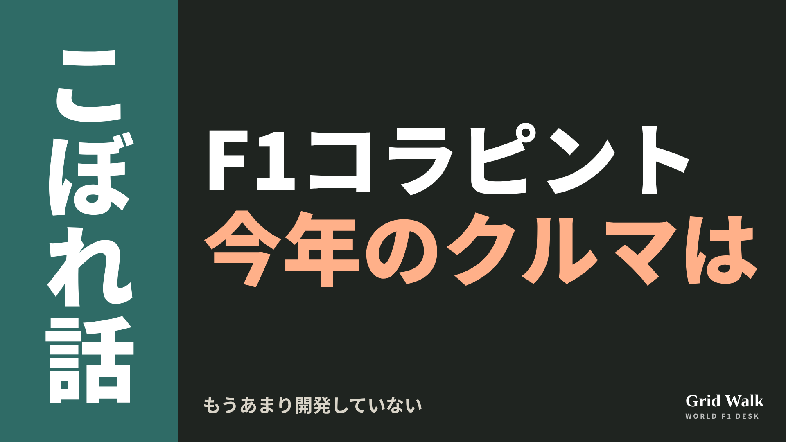<button class="cp dl" data-img="img/x_colapinto-alpine-2027-focus-20261117.png" data-name="x_colapinto-alpine-2027-focus-20261117.png">ダウンロード</button></li>
<li class="st"><div class="hd"><b>① noteをシェアするときの文</b></div><div class="bx" id="p7x0">アルピーヌのコラピントは「今年のクルマはもうあまり開発していない」。チームは2027年に力を注いでいます。noteにまとめました #F1jp #コラピント #アルピーヌ</div><button class="cp" data-plain="p7x0">コピー</button></li>
<li class="st"><div class="hd"><b>② ①への返信</b></div><div class="bx" id="p7x1">ほかの海外記事も読みたい方は、F1 Grid Walkへ。
https://f1gridwalk.github.io/lens/colapinto-alpine-2027-focus-20261117/?utm_source=x&amp;utm_campaign=colapinto-alpine-2027-focus-20261117</div><button class="cp" data-plain="p7x1">コピー</button></li>
<li class="st"><div class="hd"><b>③ ②への返信</b></div><div class="bx" id="p7x2">毎日の海外F1ニュースは、日本語でこちらにまとめています。
https://f1gridwalk.github.io/</div><button class="cp" data-plain="p7x2">コピー</button></li>
</ol></section></main><script>
function done(b,msg){const t=b.dataset.t||b.textContent;b.dataset.t=t;b.classList.add('ok');b.textContent=msg||'コピーしました';setTimeout(()=>{b.classList.remove('ok');b.textContent=t},2000)}
function selectEl(el){const r=document.createRange();r.selectNodeContents(el);const s=getSelection();s.removeAllRanges();s.addRange(r)}
async function rich(el,b){
  try{await navigator.clipboard.write([new ClipboardItem({'text/html':new Blob([el.innerHTML],{type:'text/html'}),'text/plain':new Blob([el.innerText],{type:'text/plain'})})]);done(b);return}catch(e){}
  selectEl(el);let ok=false;try{ok=document.execCommand('copy')}catch(e){}
  if(ok){getSelection().removeAllRanges();done(b)}else{done(b,'選択しました。コピーしてください')}}
async function plain(el,b){
  try{await navigator.clipboard.writeText(el.innerText);done(b);return}catch(e){}
  selectEl(el);let ok=false;try{ok=document.execCommand('copy')}catch(e){}
  if(ok){getSelection().removeAllRanges();done(b)}else{done(b,'選択しました。コピーしてください')}}
let dlns=null;(async()=>{try{dlns=await window.claude?.use?.("downloads")}catch(e){dlns=null}})();
async function img(src,b){
  b.dataset.t=b.dataset.t||b.textContent;
  if(!dlns){try{dlns=await window.claude?.use?.("downloads")}catch(e){}}
  if(!dlns){b.textContent='ダウンロードできませんでした';setTimeout(()=>{b.textContent=b.dataset.t},3500);return}
  try{const blob=await fetch(src).then(r=>r.blob());b.textContent='保存の確認を開いています…';
    await dlns.save({filename:b.dataset.name,data:blob});done(b,'ダウンロードしました')}
  catch(e){const c=e&&e.code;b.textContent=c==='declined'?'キャンセルしました':c==='rate_limited'?'少し待ってからもう一度押してください':'ダウンロードできませんでした';setTimeout(()=>{b.textContent=b.dataset.t},3500)}}
document.querySelectorAll('.cp').forEach(b=>b.addEventListener('click',()=>{
  if(b.dataset.rich)rich(document.getElementById(b.dataset.rich),b);
  else if(b.dataset.plain)plain(document.getElementById(b.dataset.plain),b);
  else img(b.dataset.img,b)}));
</script>